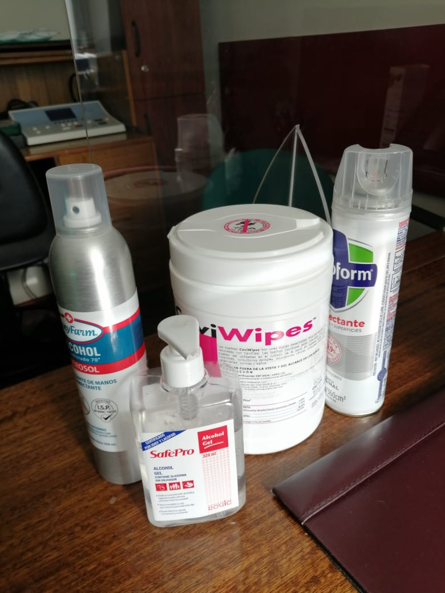

Impedanciometría
Es un examen objetivo e indoloro, que informa acerca del estado del oído medio y el mecanismo de transmisión así como de los reflejos estapediales, todo esto sin necesidad de que el paciente conteste por lo que es muy útil en niños.
No requiere de indicaciones especiales previas al examen.
| Código de prestación: | 13-01-009 |
Situación Sanitaria
Debido a las actuales condiciones sanitarias se han tomado las máximas precauciones, elementos de protección personal (EPP) y elementos desinfectantes, como se puede apreciar en la siguiente imagen:
